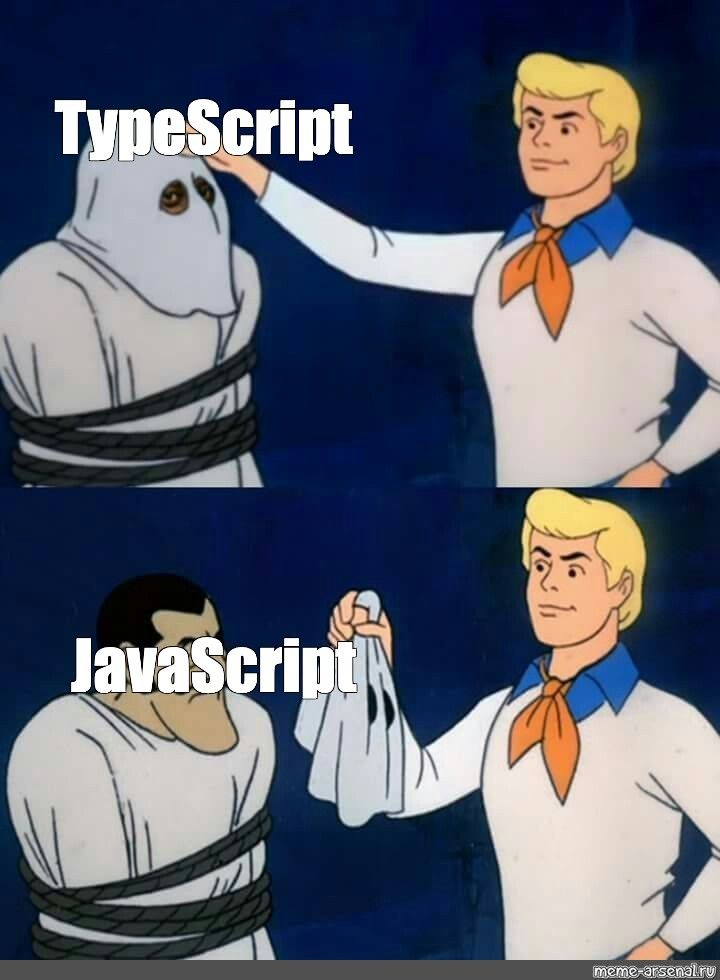
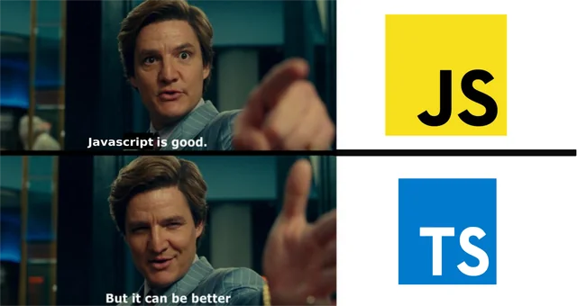

# глобально или как зависимость проекта npm i -g typescript npm i -D typescript tsc --version # проверка tsc app.ts # компиляция одного файла -> app.js tsc --init # сгенерировать tsconfig.json
1_types.ts
let username: string = "John"; let age: number = 25; let isStudent: boolean = true; let numbers: number[] = [1, 2, 3]; // массив чисел let names: Array<string> = ["Alice", "Bob"]; // второй синтаксис let person: [string, number] = ["John", 30]; // кортеж let randomValue: any; // любой — исключение! let uncertain: unknown; // требует проверки let nothing: void = undefined;
type inference: let s = "Hello" — TS сам понимает, что это string.
2_functions.ts
function greet(name: string): string {
return `Hello, ${name}!`;
}
function createUser(
name: string,
age?: number, // необязательный параметр
isActive: boolean = true // значение по умолчанию
): { name: string; age?: number; isActive: boolean } {
return { name, age, isActive };
}
const multiply = (a: number, b: number): number => a * b;
2_functions.ts
function processInput(input: string): string;
function processInput(input: number): number;
function processInput(input: string | number): string | number {
if (typeof input === "string") {
return input.toUpperCase();
}
return input * 2;
}
Несколько сигнатур — один результат: TS выбирает тип по аргументу.
3_interfaces.ts
interface User {
readonly id: number; // не изменить после создания
name: string;
email: string;
age?: number; // необязательное свойство
}
const user: User = {
id: 1,
name: "Alice",
email: "alice@example.com"
};
«Договор»: объект с таким типом ОБЯЗАН иметь эти поля.
3_interfaces.ts
interface Employee extends User {
position: string;
salary: number;
}
interface SearchFunc {
(source: string, subString: string): boolean;
}
const mySearch: SearchFunc = function(src, sub) {
return src.includes(sub);
};
4_classes.ts
interface Vehicle {
start(): void;
stop(): void;
}
class Car implements Vehicle {
public brand: string; // публичное
private mileage: number = 0; // приватное
protected engineStatus: boolean = false; // для наследников
public readonly vin: string; // только чтение
constructor(brand: string, vin: string) {
this.brand = brand;
this.vin = vin;
}
start(): void { this.engineStatus = true; }
stop(): void { this.engineStatus = false; }
public getMileage(): number { return this.mileage; }
public drive(distance: number): void { this.mileage += distance; }
}
4_classes.ts
class ElectricCar extends Car {
private batteryLevel: number = 100;
charge(): void {
this.batteryLevel = 100;
console.log("Battery fully charged");
}
}
extends — наследование полей и методовprotected — доступно в наследниках, но не снаружи5_generics.ts
function identity<T>(arg: T): T {
return arg;
}
let output1 = identity<string>("hello");
let output2 = identity<number>(42); // можно: вывод типа
interface ApiResponse<T> {
data: T;
status: number;
message: string;
}
const userResponse: ApiResponse<User> = {
data: { id: 1, name: "John", email: "john@example.com" },
status: 200,
message: "Success"
};
Один тип «на параметре» — переиспользуется для User, Product и др.
5_generics.ts
class Repository<T> {
private items: T[] = [];
add(item: T): void {
this.items.push(item);
}
getById(id: number): T | undefined {
return this.items.find(item => (item as any).id === id);
}
}
const userRepo = new Repository<User>();
userRepo.add({ id: 1, name: "Alice" });
6_union.ts
type StringOrNumber = string | number;
function processValue(value: StringOrNumber): string {
if (typeof value === "string") {
return value.toUpperCase(); // TS знает: string
}
return value.toFixed(2); // TS знает: number
}
type Employee = Identity & BusinessPartner;
const employee: Employee = {
id: 1, name: "John", credit: 1000
};
Сужение через typeof — TS понимает тип в каждой ветке.
6_union.ts
function isFish(pet: Fish | Bird): pet is Fish {
return (pet as Fish).swim !== undefined;
}
function move(pet: Fish | Bird) {
if (isFish(pet)) {
pet.swim(); // TS знает: Fish
} else {
pet.fly(); // TS знает: Bird
}
}
& у type vs extends у interfaceinterface — declaration merging (можно объявить дважды)type — нельзя расширить тем же именем
7_types_aliases.ts
type Point = { x: number; y: number };
type ID = number | string;
interface PointInterface { x: number; y: number; }
// Расширение
type Point3D = Point & { z: number };
interface Point3D extends PointInterface { z: number; }
// Declaration merging
interface Animal { name: string; }
interface Animal { age: number; }
// Animal теперь: name + age
type Person = { name: string; };
// type Person = { age: number }; // Ошибка!
tsconfig.json
{
"compilerOptions": {
"allowJs": true, // пускаем старые .js
"checkJs": false, // но пока не проверяем их
"strict": false, // постепенный режим -> strict: true
"outDir": "./dist",
"jsx": "react-jsx",
"isolatedModules": true
},
"include": ["src"]
}
Целевой режим для курсовых — strict: true; проверка в CI: tsc --noEmit.
interface для props/state компонентов'primary' | 'secondary' — варианты компонентовunknown + сужение вместо anyts-node/tsx — запуск TS-кода в Node